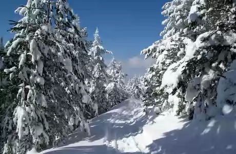
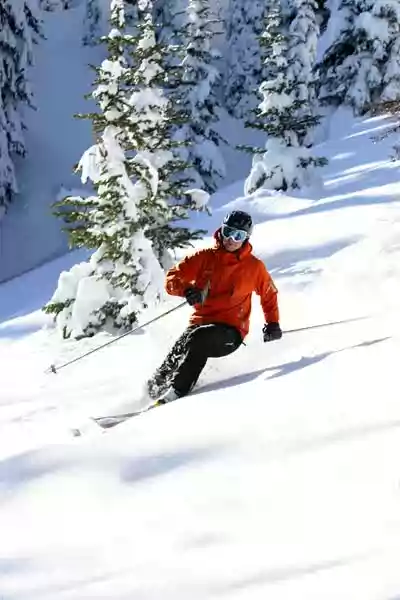

SRBIJA
Planine u Srbiji imaju mnogo da daju skijašima i ljubiteljima zimskih sportova. Skijaške staze u ovoj zemlji pružaju šansu i početnicima i vrhunskim
skijašima. Pogodne su i za snowboard, monoski, deltaplan, motorne sanke, noćno skijanje.
Brojni kafići, restorani, dobra zabava i lepi predeli planina u Srbiji nude vam pravo zadovoljstvo. Posetite ih – doživite Sunce i dinamiku tokom dana
i pravi provod tokom noći!

Najpoznatiji i najveći ski-centar u Srbiji je Kopaonik. Raspolaže sa 24 žičare, ski liftova i vezanih instalacija, koje su povezane u jedinstven sistem,
što skijaše oslobađa dovoza i odvoza na staze. Skijaški tereni i staze nalaze se na nadmorskoj visini od 1650 do 2017 m. Bezbedne i uređene svrstane su
u prvu kategoriju. Ukupna dužina staza je 55 km. Žičare su različitih kapaciteta i mogu da prevezu više od 32.000 skijaša na sat. Tu su i nordijske
staze u dužini od 12 km. Snowboard, noćno skijanje pod reflektorima popularni su kod mlađih generacija. Na nižoj nadmorskoj visini, u Brzeću, razvijen
je ski-kompleks za decu i učenike.
Jedan od brendova domaćeg turizma, nalazi se u jugozapadnom delu Srbije na nadmorskoj visini između 700 i 1500 m. Zlatibor je gotovo idealan za sve
zimske sportove. Blago zatalasana visoravan sa dosta snega i velikim brojem sunčanih dana privlači turiste i zimi i leti.
Ski centar „Tornik“ nalazi se na nadmorskoj visini od 1110 do 1490 m, 9 km od centra Zlatibora. Staze, kojih ima četiri (Čigota, Tornik, Ribnica,
Zmajevac), pogodne su za takmičenja u slalomu, veleslalomu i superveleslalomu.
Osim šestosedne žičare i dva ski lifta, u ski centru postoji i nova vrsta instalacije tzv. „tjubing“, koja omogućava sankanje na gumama tokom čitave
godine. Tjubing, kao i sama žičara, može da se koristi i u letnjem i u zimskom periodu godine i pruža neizmerno zadovoljstvo i uzbuđenje svima koji
odluče da je isprobaju. Ski centar Tornik opremljen je sistemom za veštačko osnežavanje.
U centralnom delu Zlatibora nalaze se uređene staze za smučarsko trčanje i biatlon, koje se zbog svoje preglednosti i konfiguracije terena, ubrajaju
među najlepše u Evropi.

U sklopu severnokopaoničkih planina, 200 km južno od Beograda, nalazi se planina Goč, na nadmorskoj visini od 1124 m. Lokacija „Dobre vode“ pripada
Turističkoj organizaciji Opštine Kraljevo. Žičara jednosedežnica je dugačka 1500 m, široka 40 m, sa visinskom razlikom od 350 m. Gornji deo staze je
blažeg nagiba, pogodna je i za početnike, dok je donji deo staze prilično strm. Od nedavno u ponudi je i 30 metarska skakaonica, idealna za treninge
skijaša skakača i njihovu obuku.
Ski-staza na Goču na teritoriji Turističko-sportskog centra Vrnjačka Banja nalazi se na 11 km od centra banje. Horizontalna dužina trase je 520 m,
koliko su duge i dve uređene ski-staze širine oko 60 m. Vrh ski-staze je na 1123 m. Poseban doživljaj je skijanje noću. Do ski-staze je organizovan
besplatan prevoz mini-busom, a na stazi radi i besplatna škola skijanja.
Stara planina je najveća planina u istočnoj Srbiji, visokoplaninski masiv koji se prostire kao prirodna granica prema Bugarskoj. Skoro pet meseci
godišnje je pod snegom na visini između 1100 i 1900 m. Babin zub sa vrhom nadmorske visine 1758 m je jedan od najlepših krajolika Stare planine i
predstavlja zaštićeni prirodni rezervat. Sadržaj skijaškog centra „Babin zub“ čine staze na lokacijama „Konjarnik“, „Sunčana dolina“, kao i „Markova
livada“, koja je osvetljena i za noćno skijanje. Skijalište „Babin zub“ poseduje novoizgrađenu četvorosednu žičaru „Konjarnik“ sa pokretnom trakom za
ukrcavanje skijaša, kapaciteta 1500 skijaša na sat i ski-lift „Sunčana dolina“ kapaciteta 1200 skijaša na sat, kao i ski-lift „Markova livada“.
Divčibare se nalaze na planini Maljen, na 1000 m nadmorske visine, jugoistočno od Valjeva i 120 km od Beograda. Mesto Divčibare na nadmorskoj visini od 980 m ima blagu klimu, bogat biljni i životinjski svet, obilje izvora i tekućih voda, pogodnu konfiguraciju zemljišta. Okolne visove i blage prevoje sneg godišnje prekriva 3 do 4 meseca. Sve to čini Divčibare podjednako privlačnim i leti i zimi. U okviru zimske turističke ponude Divčibara je i ski-staza „Crni vrh“, dužine 850 m, sa dvosednom žičarom kapaciteta 1200 skijaša na sat.